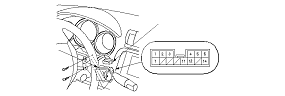
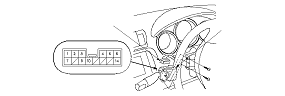

Windshield Wiper Intermittent Control Circuit Input Test
Remove the wiper/washer switch.
With the connector connected, make these input tests at the connector.
If a test indicates a problem, find and correct the cause, then recheck the system.
If the input tests prove OK, replace the wipers/washers switch.
Cavity
Wire
Test condition
Test: Desired result
Possible cause if result is not obtained
12 [9]
BLU/WHT
Ignition switch ON (II), the windshield wiper switch in ‘‘INT''
Check for voltage between the No. 12 [No. 9] and No. 4 [No. 3] terminals:
There should be about 0-5 V-0-5 V repeatedly.
Faulty wipers/washers switch
Faulty windshield wiper motor
An open in the wire
[ ]:RHD type except KE
LHD type and KE model:

RHD type except KE:
